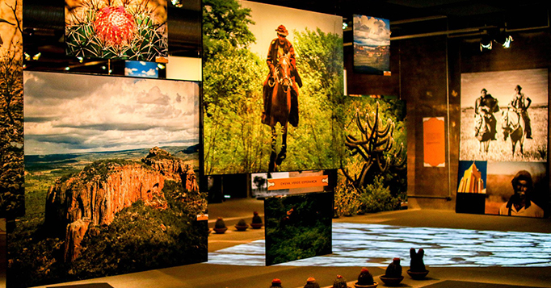

Centro Cultural Cais do Sertão
O Centro Cultural Cais do Sertão é um espaço inovador que celebra a rica herança cultural do sertão nordestino. Localizado no coração do Recife Antigo, oferece exposições interativas, música ao vivo e uma imersão na vida e obra de Luiz Gonzaga, o Rei do Baião. Venha descobrir a magia do sertão e suas tradições neste centro cultural vibrante e acolhedor. Uma visita imperdível para todos os amantes da cultura nordestina!
Paço do Frevo
O Paço do Frevo é uma vibrante celebração da alma musical do Recife. Situado no Recife Antigo, este centro cultural oferece exposições interativas e oficinas que mergulham você na história e no ritmo contagiante do frevo. Com apresentações ao vivo e um ambiente dinâmico, é um lugar onde a cultura pernambucana dança ao som da tradição e da modernidade.
Parque de Esculturas Francisco Brennand
O Parque de Esculturas Francisco Brennand é um fascinante museu a céu aberto no Recife Antigo. Situado à beira-mar, o parque exibe impressionantes obras do renomado artista Francisco Brennand, criando um cenário de arte e natureza. Com esculturas que capturam a imaginação, é um destino imperdível para amantes da arte e da beleza.
.jpeg)